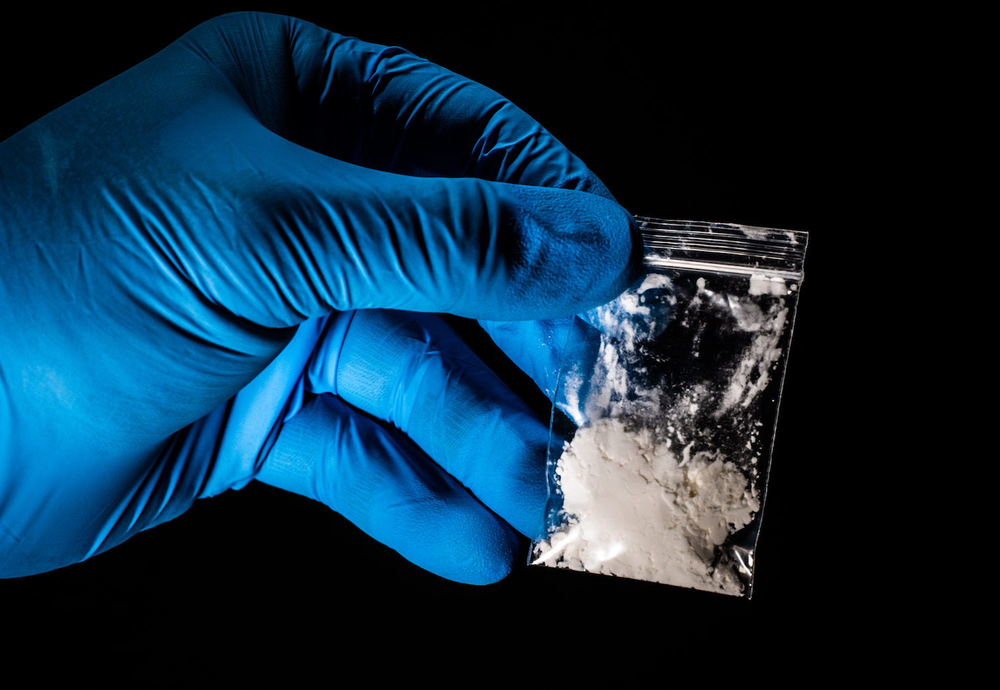

Fentanyl is an opiate that is 50 to 100 times stronger than morphine, a high strength painkiller used in hospitals. Many drugs that people buy on the street have been found to be laced with this drug in order to make it more addictive, but it actually kills many people. To combat this, companies have created fentanyl testing strips so drugs can be tested for fentanyl. They can be purchased here.
Not an affiliate link.
Physiological Effects
There are dozens of side effects that come with fentanyl use, the most severe of which being labored breathing, irregular heartbeat, severe swelling, and fainting.
Psychological Effects
The most common severe psychological effect of fentanyl is addiction. Beside that, it can also cause nervousness, hallucinations, extreme sleepiness, and mood swings.
Overdose and Withdrawal
Fentanyl overdose is common among fentanyl users. The most common signs of overdose are slow or extremely shallow breathing, but other symptoms include depression, weakness, muscle stiffness, back pain, and diarrhea.
Unlike most drugs, there is an over-the-counter "antidote" for a fentanyl overdose called naloxone, commonly known as Narcan. Naloxone typically comes in an easy-to-use nasal spray that can temporarily or completely reverse the effects of an overdose. It can be bought at many drugstores without a prescription
When someone stops using fentanyl, there is a myriad of symptoms they might experience. Some common ones are high blood pressure and heart rate, nausea and vomiting, anxiety, chills, cramps, and weakness.
These symptoms can be severe and extremely uncomfortable, making relapse easy. Because of this, many professionals do not recommend stopping the use of narcotics like fentanyl suddenly (also known as a cold-turkey). Instead, using a method such as drug substitution therapy (where someone is safely transitioned partially or completely off opiates using a substitute drug) significantly decreases the chances of relapse.
Effects on Neurotransmission
Fentanyl, is an antagonist, which blocks the pain receptors in the peripheral nervous system from sending pain signals to the brain. Similarly, naloxone is also an antagonist, which blocks opiates from being able to attatch to the pain receptors and cause a reaction in the body.
In a medical context, fentanyl's strong pain blocking attributes can be incredibly beneficial. However, unless prescribed by a doctor, fentanyl can be extremely dangerous due to its high toxicity in the body. Although it can produce arguably positive effects neurologically, as little as two milligrams can be emough to kill people.Narcotics are the most different out of all four categories simply because they are much more inherently dangerous than the other categories.
Fentanyl deaths are on the rise, almost doubling over the past few years.